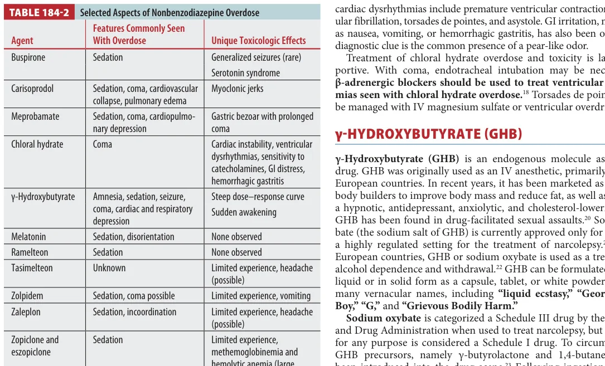

Ch.184 Nonbenzodiazepine Sedatives - EM Board Review
Toxicology Chapter 184
Nonbenzodiazepine Sedatives
This chapter is a grab bag of sedative-hypnotics. The board trick is not memorizing every half-life. It is recognizing the few agents with special danger: chloral hydrate dysrhythmias, GHB sudden awakening, carisoprodol/meprobamate coma, and Z-drug sedation.
Board lens: most treatment is supportive, but do not miss the exceptions: chloral hydrate can cause catecholamine-sensitive ventricular dysrhythmias, and GHB can look deeply comatose then wake suddenly.
Table 184-2 is the high-yield overdose comparison table.

Tintinalli Table 184-2. Selected aspects of nonbenzodiazepine overdose.
Buspirone
Buspirone is an anxiolytic with serotonin-1A partial agonism and dopamine-2 antagonism. Overdose is usually mild: sedation, GI discomfort, vomiting, and dizziness.
Rare but testable: generalized tonic-clonic seizure and serotonin syndrome have been reported, but true causality can be difficult because coingestions are common.
Carisoprodol and Meprobamate
CarisoprodolMetabolized to meprobamate; overdose can produce sedation, coma, cardiovascular collapse, pulmonary edema, and myoclonic jerks often seen with toxicity.
MeprobamateSedation, coma, and cardiopulmonary depression. Large ingestion can form a gastric bezoar with prolonged coma.
WithdrawalCarisoprodol withdrawal resembles alcohol/benzodiazepine withdrawal because of GABA-A activity; treat by reinstitution or other GABA-A agonists.
Prolonged coma clue: meprobamate bezoar may respond to multidose activated charcoal or endoscopic removal if retained drug is suspected.
Chloral Hydrate
Chloral hydrate is converted by alcohol dehydrogenase to trichloroethanol. Ethanol coingestion worsens toxicity by increasing trichloroethanol production and decreasing ethanol metabolism.
Cardiac danger: overdose can cause coma plus cardiovascular instability, ventricular dysrhythmias, decreased contractility, myocardial electrical instability, and increased catecholamine sensitivity. Treat torsades with magnesium; use beta-blockade when catecholamine-sensitive ventricular rhythms occur.
GI irritation, nausea/vomiting, and hemorrhagic gastritis can occur. Treatment is largely supportive, with airway management and careful cardiac monitoring.
GHB, GBL, and 1,4-Butanediol
Gamma-hydroxybutyrate (GHB) and precursors can cause amnesia, sedation, seizure, coma, respiratory depression, bradycardia, hypothermia, and rapid recovery. It has a steep dose-response curve and is used recreationally and in drug-facilitated assault.
Signature pattern: profound coma with preserved airway reflexes can rapidly convert into sudden awakening. Many patients regain consciousness in 3-4 hours.
Toxicologic confirmation is difficult because of short half-life and endogenous GHB; collect blood or urine as soon as possible if testing is needed. Physostigmine/neostigmine are not recommended. Fomepizole has little benefit in 1,4-butanediol overdose because preventing conversion to GHB does not meaningfully shorten symptoms.
Melatonin Agents and Z-Drugs
MelatoninUsually mild sedation/disorientation, fatigue, headache, dizziness, irritability. Life-threatening effects are not expected after routine overdose.
Ramelteon / tasimelteonMelatonin receptor agonists; reported overdose experience is limited and mostly supportive.
ZolpidemSomnolence and nausea are common; overdose can cause sedation or coma, especially with coingestants. Hepatic metabolism means caution in liver disease.
ZaleplonRapid absorption, short half-life, limited overdose data; expected sedation/incoordination.
Zopiclone / eszopicloneSedation; large overdose reports include methemoglobinemia and mild hemolytic anemia.
Historical Sedatives
EthchlorvynolProlonged deep coma, hypothermia, hypotension, bradycardia, cardiovascular collapse, bullous lesions, vinyl-like odor; supportive care, rare hemoperfusion reports.
GlutethimideDeep coma with cyclic responsiveness; anticholinergic features such as tachycardia, hyperthermia, mydriasis, urinary retention, intestinal stasis.
MethaqualoneMuscular hyperactivity, hyperreflexia/clonus, lower respiratory depression/hypotension than other sedatives, but severe cases still need prolonged supportive care.
Drug Dose Reference
Intervention
Adult dose
Pediatric dose
Use
Airway support
Positioning, oxygen, capnography, bag-mask, intubation if needed
Same principles
Severe sedation, hypoventilation, aspiration risk, mixed overdose.
Activated charcoal
50 g PO/NG once
1 g/kg PO/NG, max 50 g
Early ingestion with protected airway; avoid if aspiration risk is high.
Multidose activated charcoal
25-50 g PO/NG every 4 h
0.5 g/kg every 4 h
Consider for meprobamate bezoar/prolonged coma with poison center input.
Magnesium sulfate
2 g IV over 10-15 min
25-50 mg/kg IV, max 2 g
Torsades de pointes, including chloral hydrate-related ventricular dysrhythmia.
Beta-blocker
Esmolol infusion or other titratable agent per tox/cardiology guidance
Specialist-guided
Catecholamine-sensitive ventricular dysrhythmias from chloral hydrate.
Benzodiazepines
Lorazepam 2-4 mg IV, repeat as needed
Lorazepam 0.1 mg/kg IV, max 4 mg
Seizures/agitation or sedative withdrawal. Not an antidote to GHB coma.
Key Points: Nonbenzodiazepine Sedatives
1. Start supportiveABCs, glucose, ventilation, temperature, and aspiration prevention are the core.
2. Chloral = dysrhythmiaWatch for ventricular dysrhythmias and catecholamine sensitivity.
3. GHB wakes fastDeep coma may resolve suddenly within hours; testing is time-sensitive.
4. Carisoprodol jerksMyoclonic jerks in a sedated/comatose patient point toward carisoprodol toxicity.
5. Meprobamate bezoarLarge ingestions can cause retained drug and prolonged coma.
6. Z-drugs are not benignUsually supportive, but coma and coingestion deaths occur.
7. No physostigmine for GHBPhysostigmine/neostigmine are not recommended.
8. Mixed overdose rulesAlcohol/opioids/other sedatives change the risk far more than the label alone.
Assessment
Q1. A young adult is deeply comatose after a party exposure, has bradycardia and respiratory depression, then awakens abruptly 3 hours later. Most likely agent?
A. Melatonin overdose is usually mild.
B. Correct. GHB classically causes deep coma with sudden awakening.
C. Iron causes GI/shock/metabolic toxicity.
D. Digoxin causes dysrhythmia/GI/visual findings.
Q2. Chloral hydrate overdose most specifically raises concern for:
A. Not cyanide.
B. Not the key overdose issue.
C. Correct. Chloral hydrate can cause cardiac instability and ventricular dysrhythmias.
D. Pulmonary fibrosis is not the signature.
Q3. A sedated patient has myoclonic jerks after ingesting a muscle relaxant metabolized to meprobamate. Likely drug?
A. Correct. Carisoprodol is metabolized to meprobamate and can cause myoclonic jerks.
B. Ramelteon is a melatonin receptor agonist.
C. Melatonin overdose is generally mild.
D. Zaleplon is a Z-drug hypnotic.
Q4. In suspected GHB intoxication, which statement is most accurate?
A. Physostigmine/neostigmine are not recommended.
B. Fomepizole has little benefit because symptoms are short.
C. GHB has short half-life and endogenous presence.
D. Correct. Samples should be collected quickly if testing is needed.
Q5. Large meprobamate ingestion causes prolonged coma. Which special mechanism can explain persistence?
A. Not the mechanism.
B. Correct. Meprobamate can form a bezoar and prolong coma.
C. Methemoglobinemia is reported with large zopiclone-type overdoses, not every meprobamate case.
D. Not cyanide.
Q6. Which agent is generally expected to cause only mild sedation/disorientation after overdose?
A. Chloral hydrate can be cardiotoxic.
B. Meprobamate can cause prolonged coma/cardiopulmonary depression.
C. Correct. Melatonin overdose is usually mild.
D. Ethchlorvynol can cause prolonged deep coma and collapse.
Q7. Zolpidem overdose most often requires:
A. Correct. Z-drug toxicity is usually supportive, with attention to coingestions.
B. Digoxin antidote is unrelated.
C. Hydroxocobalamin treats cyanide.
D. Not indicated routinely.
Q8. A patient with chloral hydrate overdose develops torsades de pointes. Best immediate drug?
A. Not benzodiazepine reversal.
B. Naloxone does not treat torsades.
C. Not indicated and could be dangerous.
D. Correct. Magnesium is used for torsades.
Q9. Carisoprodol withdrawal resembles alcohol/benzodiazepine withdrawal because these agents share:
A. Not organophosphate/carbamate.
B. Correct. Withdrawal mimics ethanol/benzodiazepine withdrawal due to GABA-A physiology.
C. Digoxin mechanism.
D. Not cyanide.
Q10. A massive zopiclone/eszopiclone overdose has which reported unusual complication?
A. Not reported as the signature.
B. Lead is separate.
C. Correct. Large zopiclone-type overdoses have reported methemoglobinemia and mild hemolytic anemia.